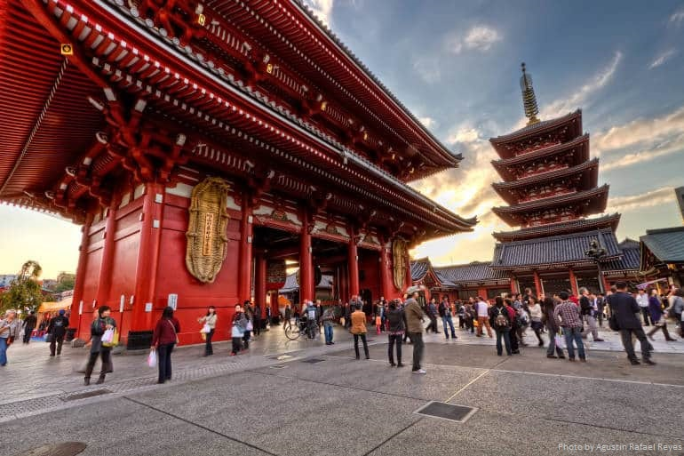

Toyko Tower
Government District
Hachiko Crossing
Business District
Asakusa Shrine
Temple district
For travel information go to: https://us.jnto.go.jp/top/index.php
Our Itenerary!
First Stop: Tokyo
Tokyo is Japan's largest and most populated city. It has been the capitol of Japan since 1868. It has over 13 million people living in just the downtown and also has the largest metropolitan area in the world. It has three main distinct districts where tourists should go: the government district, the business district, and the temple district. Each district has its own certain landmarks and icons which need to be seen to believe. This is my reccommended list of places to see.
| Name | Location | Picture |
|---|---|---|
| Toyko Tower |
Government District |
|
| Hachiko Crossing | Business District |
|
| Asakusa Shrine |
Temple district |
 |
Kyoto is Japan's oldest city, and it used to be its capitol. This is home to the most famous temples and shrines around Japan. It is a simple 3 hour train ride away from Tokyo. It is also built of two districts. The temple district and the city district. Four tourism purposes, we will focus on the temple district. This is where the Emporor used to live and each new one built himself a palace and temple. This led to the build up of countless beautful temples. Here are two of my favorites.
| Name | Picture |
|---|---|
| The Golden Pavillion |
|
| The Leaping Temple |
This is the second most populated city in Japan. It is located west of both Toyko and Kytot. A 4 hour train ride from Tokyo can get you there. They are famous for their ramen and wagyu beef. The food is the best part of this city. However, there are not many famous attractions that I would recommend. I would simply spend a day walking around the business district. There are several great shopping malls as well.